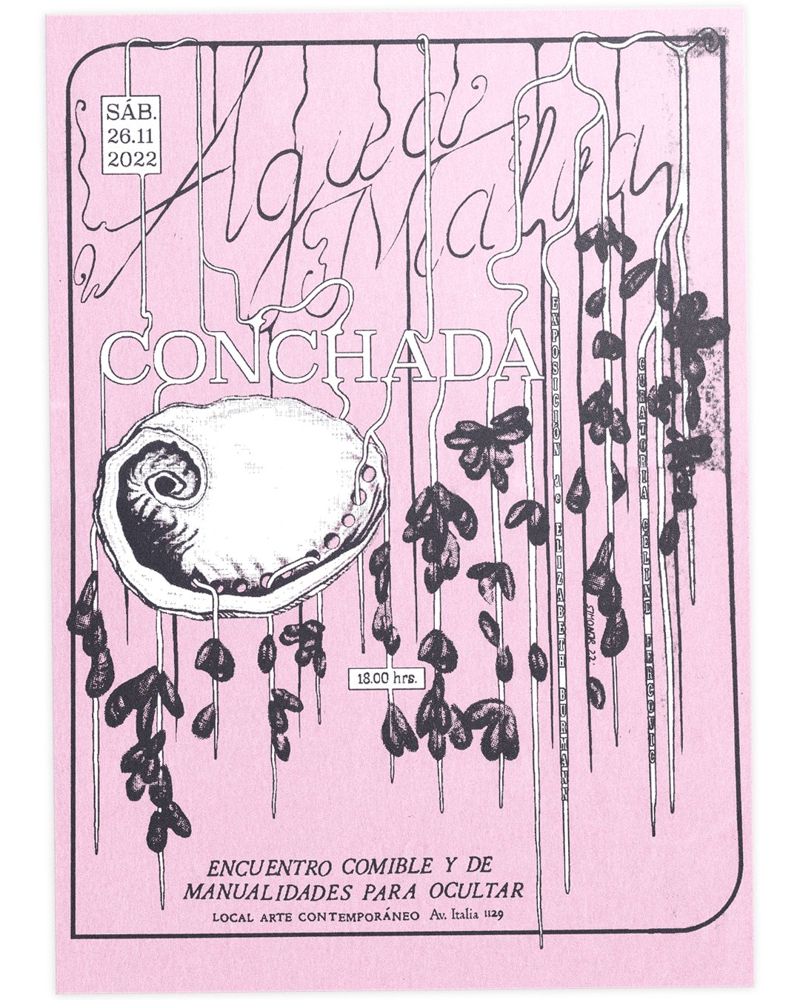

Agua Malva

Afiche para "Conchada", encuentro comible y de manualidades de Agua Malva, en Local Arte Contemporáneo (Av. Italia 1129), 26 de noviembre de 2022.

Afiche para "Conchada", encuentro comible y de manualidades de Agua Malva, en Local Arte Contemporáneo (Av. Italia 1129), 26 de noviembre de 2022.